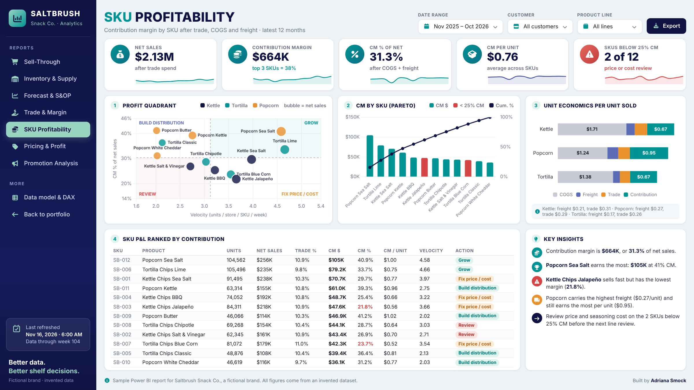

Power BI sample · Finance · Contribution margin
Which SKUs actually make money once trade, COGS and freight are paid, and what should the brand do with each one? This model builds a P&L for every SKU and customer, then places each SKU on a velocity vs. margin quadrant.
Saltbrush Snack Co. is a fictional brand. Every number on this page comes from an invented dataset, not from an employer or client.
Contribution margin is $664K, or 31.2% of net sales. Popcorn Sea Salt earns the most ($105K at 40.9%). Kettle Chips Jalapeño is the fourth-fastest seller but has the lowest margin (21.8%), so price or seasoning cost is the lever, not distribution. Two SKUs sit below 25% contribution margin.
A star schema: one fact table with the numbers, and dimension tables for filtering. Relationships are one-to-many from each dimension to the fact table on its ID or key column.
| Table | Contents |
|---|---|
fact_sku_pnl | Month × customer × SKU: units, gross sales, off-invoice, scan-downs, slotting and spoilage (allocated by gross sales share), COGS, freight |
fact_retail_sales | Week × retailer × SKU scan data, used for velocity |
dim_product | SKU, product, product line, unit cost, freight per unit |
dim_retailer | Customer, channel, total stores |
This is a portfolio sample built on invented data. Before using measures like these in production, I validate them against source totals and agree the definitions with the business.
Gross Sales = SUM ( fact_sku_pnl[GrossSales] )
Trade Spend =
SUM ( fact_sku_pnl[OffInvoice] ) + SUM ( fact_sku_pnl[ScanDown] )
+ SUM ( fact_sku_pnl[Slotting] ) + SUM ( fact_sku_pnl[Spoilage] )
Net Sales = [Gross Sales] - [Trade Spend]
Contribution Margin =
[Net Sales] - SUM ( fact_sku_pnl[COGS] ) - SUM ( fact_sku_pnl[Freight] )
CM % = DIVIDE ( [Contribution Margin], [Net Sales] )
CM per Unit = DIVIDE ( [Contribution Margin], SUM ( fact_sku_pnl[Units] ) )
-- Units per store selling, per SKU, per week (latest 52 weeks of scan data)
Velocity =
DIVIDE ( SUM ( fact_retail_sales[Units] ), SUM ( fact_retail_sales[StoresSelling] ) )
-- Quadrant split at the median SKU, so the action updates with any filter
SKU Action =
VAR Vel = [Velocity]
VAR CM = [CM %]
VAR VelMd = MEDIANX ( ALLSELECTED ( dim_product[SKU] ), [Velocity] )
VAR CMMd = MEDIANX ( ALLSELECTED ( dim_product[SKU] ), [CM %] )
RETURN
SWITCH ( TRUE (),
Vel >= VelMd && CM >= CMMd, "Grow",
Vel >= VelMd, "Fix price / cost",
CM >= CMMd, "Build distribution",
"Review" )
-- Pareto: share of total contribution from this SKU and every SKU that earns more
Cumulative CM % =
VAR ThisCM = [Contribution Margin]
VAR SKUs = ADDCOLUMNS ( ALLSELECTED ( dim_product[SKU] ), "@cm", [Contribution Margin] )
RETURN
DIVIDE ( SUMX ( FILTER ( SKUs, [@cm] >= ThisCM ), [@cm] ), SUMX ( SKUs, [@cm] ) )Download the CSV files to rebuild this report: fact_sku_pnl.csv · fact_retail_sales.csv · dim_product.csv · dim_retailer.csv, or get all sample files (.zip).